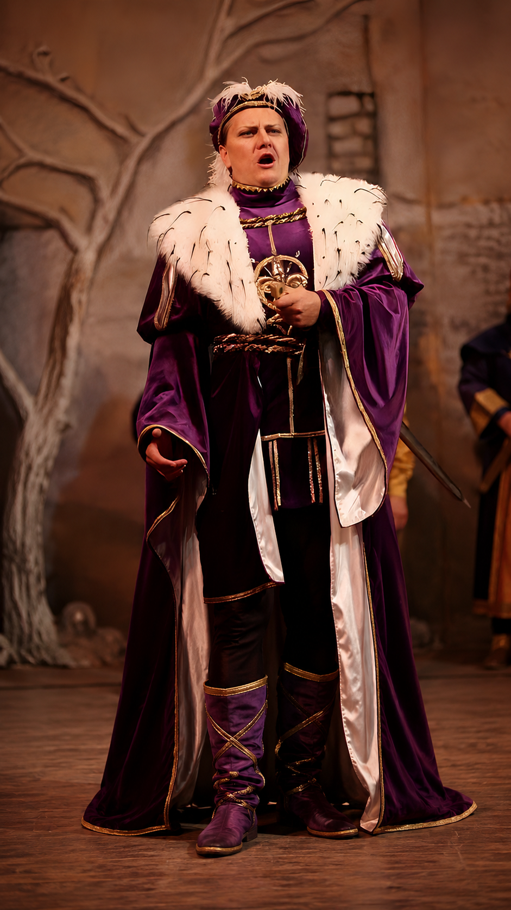

Project card
Macbeth
24 · 2020/21
National Theatre / State Opera Prague
Проект
Macbeth - Verdi
Партия
Macbeth
Театр и даты
National Theatre / State Opera Prague, Prague, Czech Republic. 11,20,24 Sep; 3 Oct 2020 etc.
Дирижёр
Jiří Štrunc
Режиссёр / постановка
Martin Čičvák
Художники / production team
Set: Hans Hoffer; Costumes: Marija Havran; Movement: Tomáš Krivošík; Chorus: Adolf Melichar; Dramaturgy: Jitka Slavíková.
Статус проверки
Подтверждено официальной страницей и Operabase.